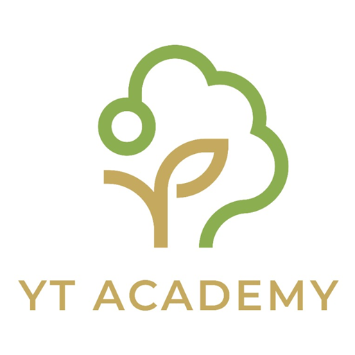
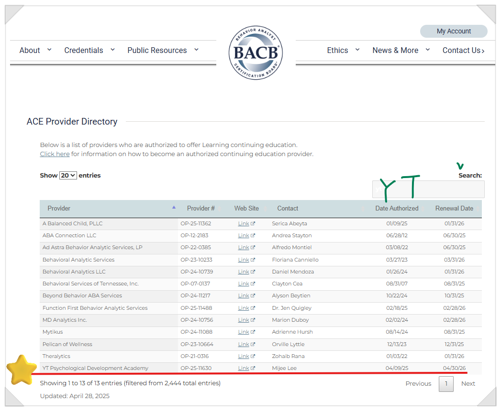
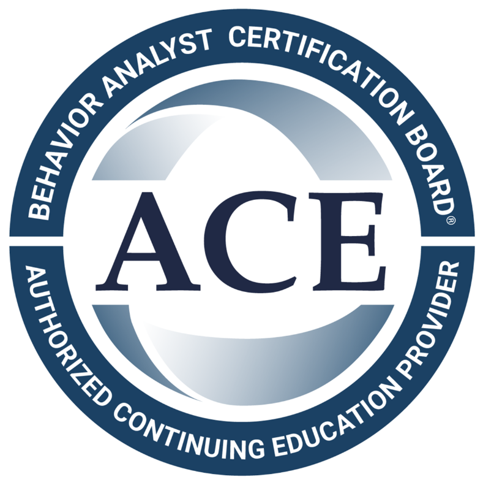
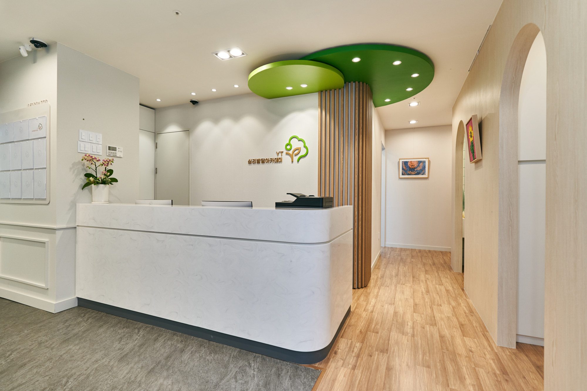
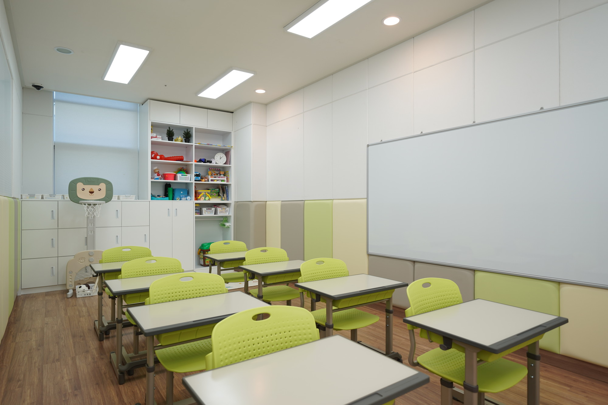
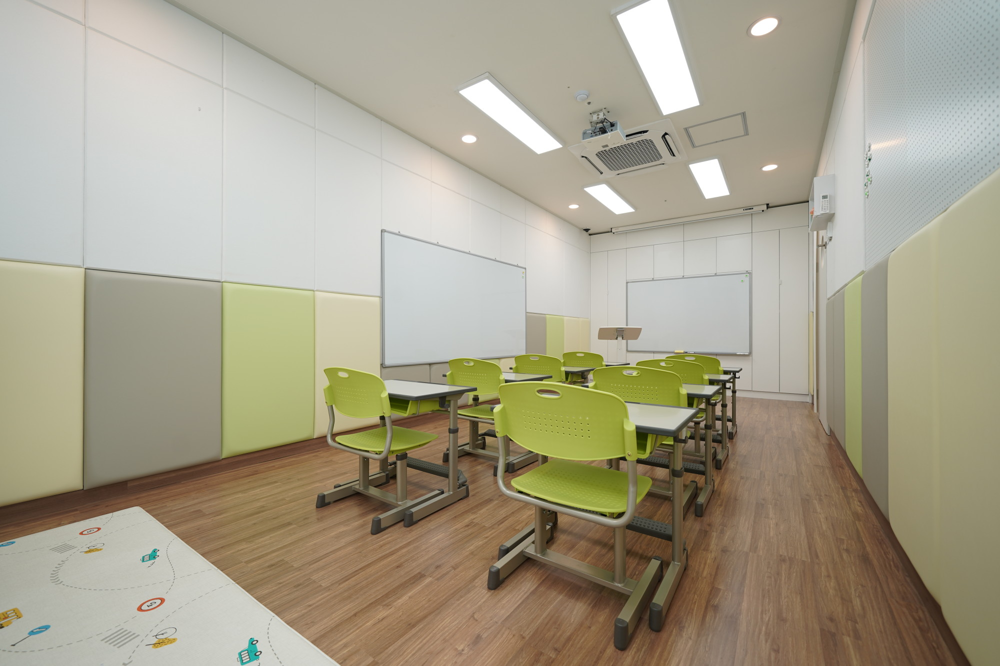
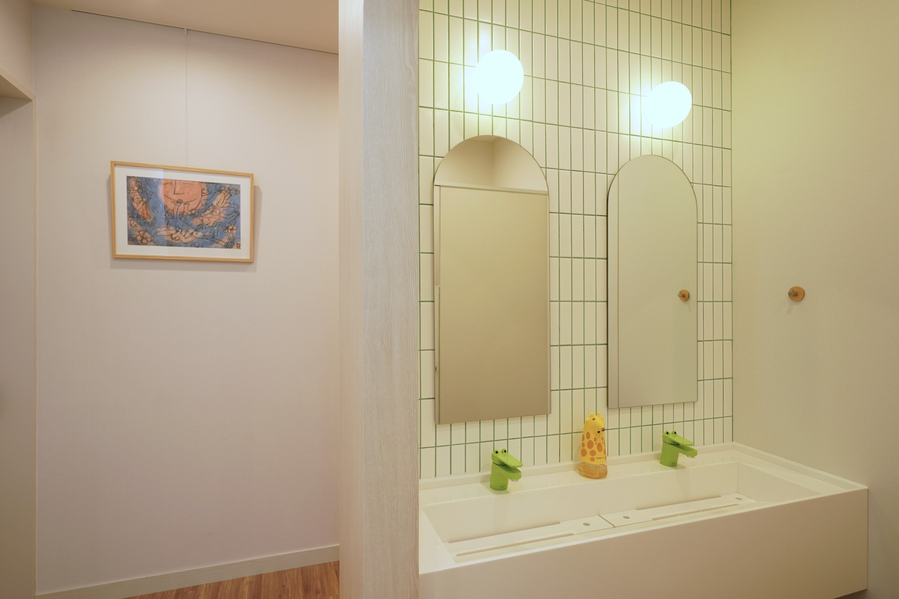
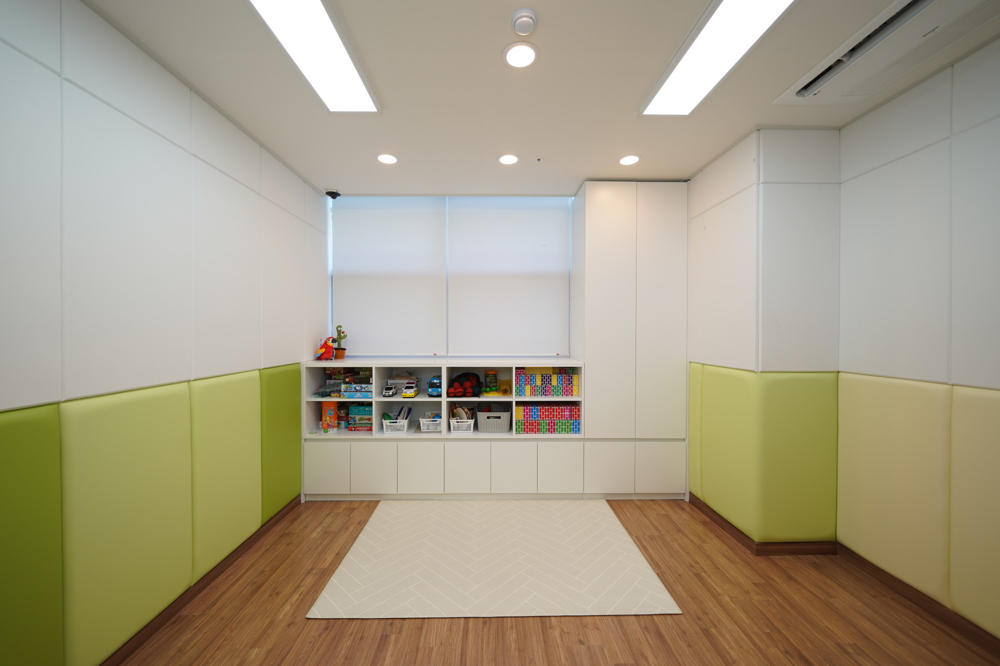
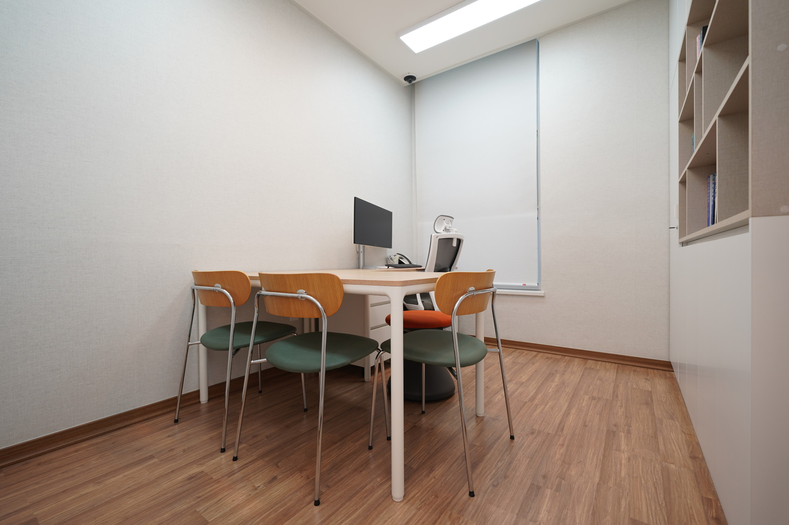

아이의 행동과 속도를 깊이 이해하고 존중할 때 진정한 성장의 변화가 시작됩니다.
아이의 느린 발달과 양육의 어려움은 부모님의 잘못이 아닙니다. 세상에 태어난 모든 아이는 저마다 세상을 마주하고 성장하는 '고유한 발달 속도와 배움의 방식'을 지니고 있습니다.
아이만의 성장 리듬을 헤아리지 못한 채 획일적 기준에 맞추려 하면 상처가 깊어집니다. YT 심리발달 아카데미는 아이의 속도를 존중하며, 부모님과 함께 온전한 성장의 길을 찾아갑니다.
단기 프리랜서 채용 없이 2년 도제식 수련을 거친 정예 연구진이 직접 치료합니다.
주간 의무 사례 관리와 BACB 공인 공식 보수교육(ACE Provider)으로 높은 임상 전문성을 유지합니다.
2년간 이미지 원장님의 1:1 밀착 도제 수련을 거치며 현장 노하우를 전수받습니다. 연구진 전원이 사례를 공동 관리하며 정예 치료사진을 직접 양성합니다.
치료실 내 주간 사례 관리를 의무화하고, 연세나무 소아청소년정신과 전문의와 매달 정기 협력 회의를 통해 다학제 집단 지성으로 최적의 치료 방향을 도출합니다.
미국 국제행동분석가자격기구(BACB) 공인 공식 보수교육 제공기관(ACE Provider)으로 승인받아, 행동치료 전문가 대상 공식 보수교육(CEU)을 직접 주관·교육합니다.
미국 BACB 글로벌 디렉토리에 'YT 심리발달 아카데미'로 등재되어 공인 CEU 보수교육 자격을 국제적으로 검증받았습니다.


치료·교육·상담·평가·수련·보수교육을 모두 갖춘 전문 아카데미로서 타협 없는 임상 전문성과 진심으로 보답하겠습니다.
행동과학(ABA)과 임상심리·언어·놀이 전문가가 협력하여 다각도에서 아동의 성장을 설계합니다.
국제공인 행동분석가(BCBA)가 주도하는 주간 케이스 컨퍼런스를 통해, 개별 아동의 목표 달성률과 행동 중재 플랜을 정밀하게 교차 검증합니다.
단순한 주관적 느낌이 아닌, 매 회기 아동의 반응 데이터를 수집·분석하여 체계적인 누적 진도 차트로 성장을 가시화합니다.
치료실 안에서의 긍정적 변화가 가정과 일상 교실로 자연스럽게 일반화될 수 있도록 매 세션 심층 브리핑과 실전 양육 솔루션을 제공합니다.
하남미사 본원 4층, 임상 치료사진이 직접 아이들의 눈높이에 맞추어 설계한 실제 치료실 내부를 둘러보세요.

🌿 로비 스테이션원목 벽나무 조형과 부드러운 라운드 곡선 벽면으로 아이와 부모님께 심리적 안정감을 선사합니다.

🏫 학교준비반 모의 교실눈의 피로를 덜어주는 저반사 높이조절 초등 책걸상으로 실전 학교 적응 훈련을 진행합니다.

🎬 시청각 모의 환경정면·측면 2개 칠판과 빔 스크린을 통해 개별 집중 및 원형 둘러앉기 등 다채로운 수업을 지원합니다.

🚰 자조기술(ADL) 훈련아이 눈높이에 맞춘 세면대와 급작스러운 고온 방지 안전 설계로 손씻기·양치 독립 루틴을 익힙니다.

🛡️ 안전 & 방음벽 풀시공하부 충격 방지 안전 패딩과 상부 전면 방음 흡음재를 둘러 부상 걱정 없이 몰입할 수 있습니다.

🤝 소그룹 사회기술실또래 간의 자연스러운 눈 맞춤과 규칙 공유, 양보 협상을 안전하게 연습하는 맞춤형 공간입니다.